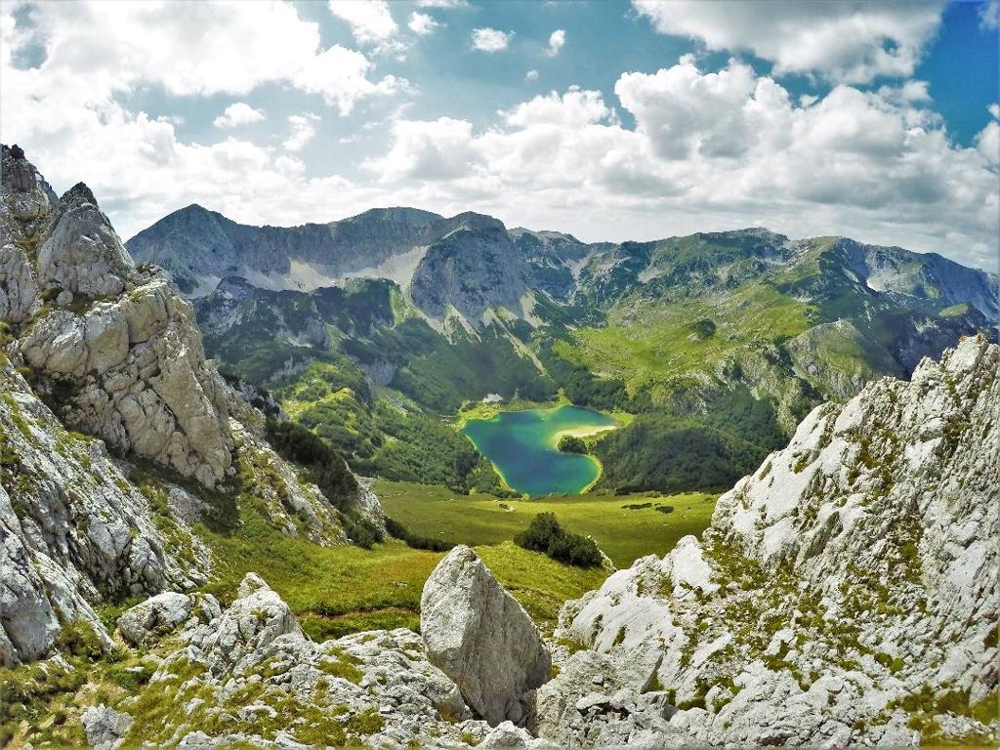

Crnogorsku općinu Plužine i općinu Foča u Bosni i Hercegovini povezuje jedinstveni kanjon rijeke Tare, najdublji u Europi i drugi najdublji na svijetu. Ta mistična rijeka dala je i ime zanimljivom turističkom pothvatu ovih dviju općina iz dvije različite države. Pružile su ruku jedna drugoj kako bi stvorile projekt T.A.R.A. što je kratica za “Turizam, Adrenalin i Rafting Avantura” koji financijski podržava Europska unija.
